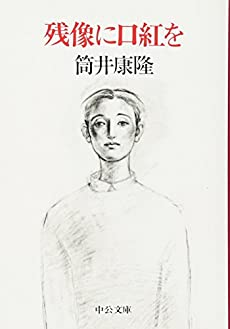

タイムトラベルができる主人公がその能力を使い、恋人や家族との時間を繰り返す。その中で、何気ない普段の日々がかけがえのない時間だったと気づく、そんな物語になっています。何よりヒロインが美人！！

小松左京、星新一と並び「SF御三家」と評される筒井康隆が描く超挑戦的な作品。五十音をランダムに消してゆき、残された音で文章を綴っていく実験的小説。その世界の中では音を名前に持つものも消えてゆく。
トップページへ